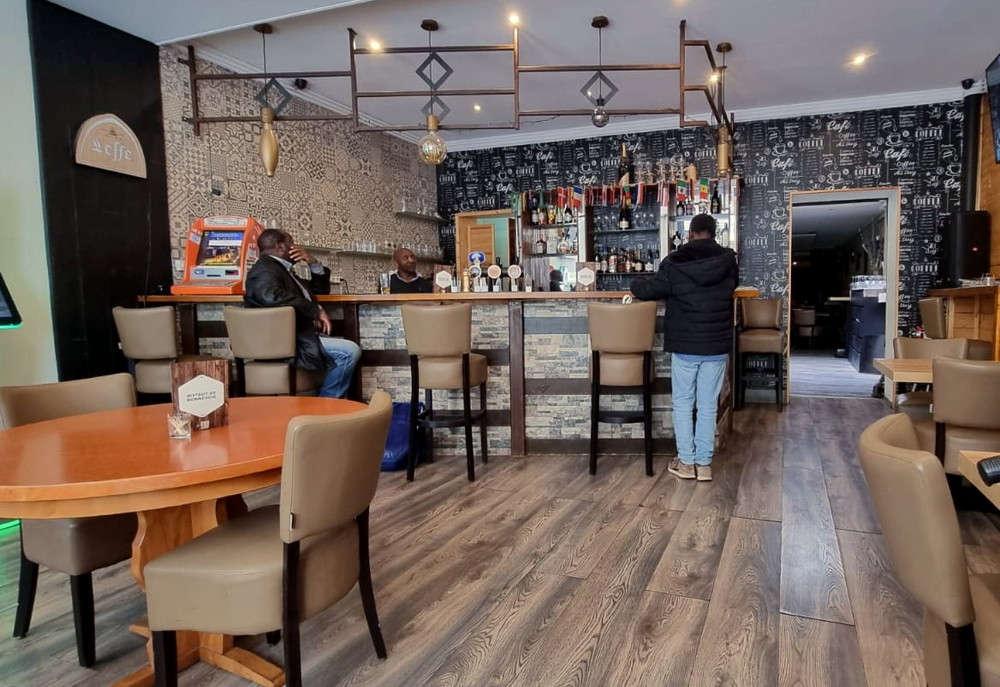
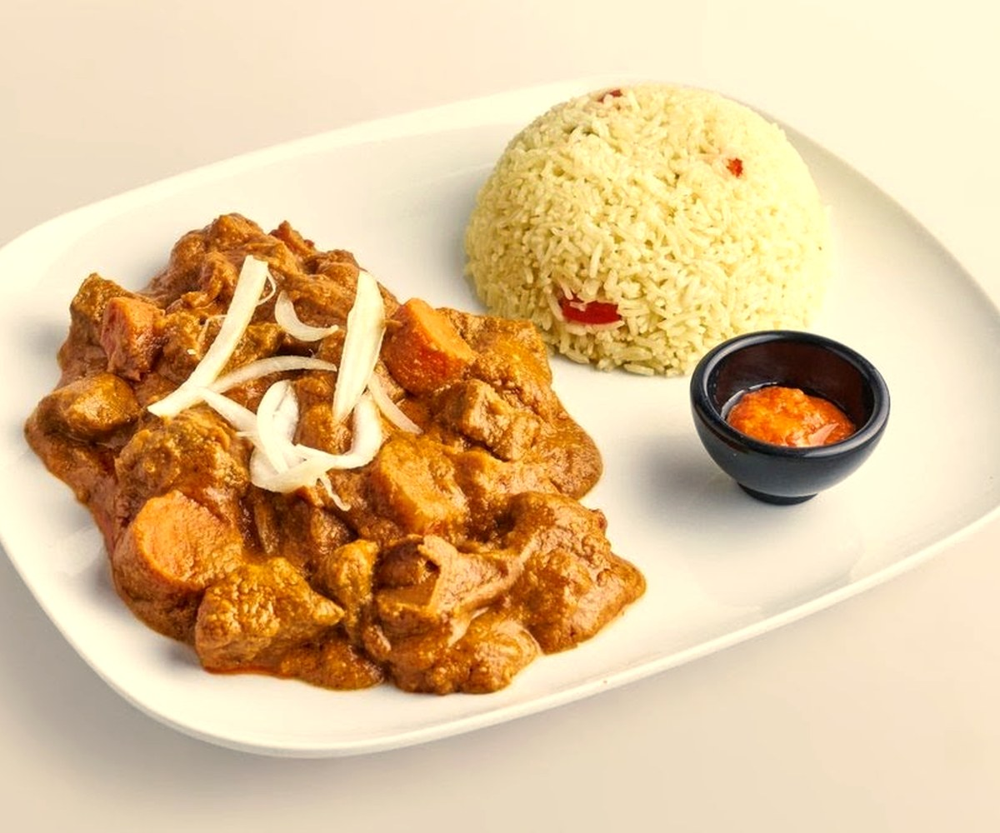
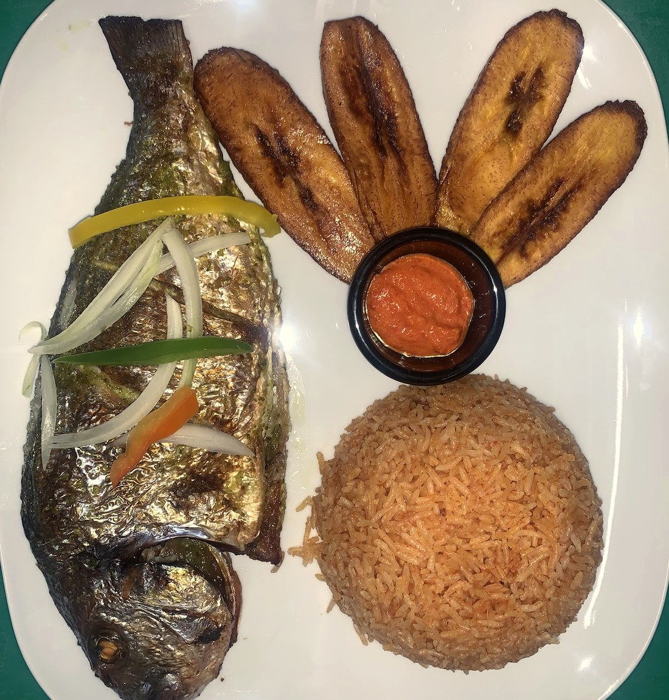
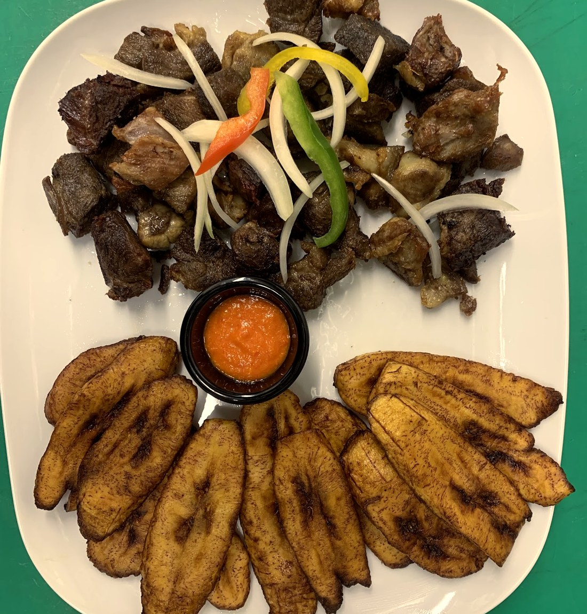
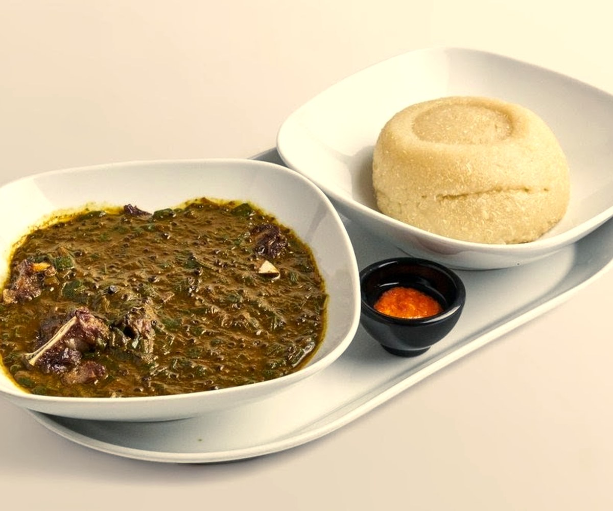
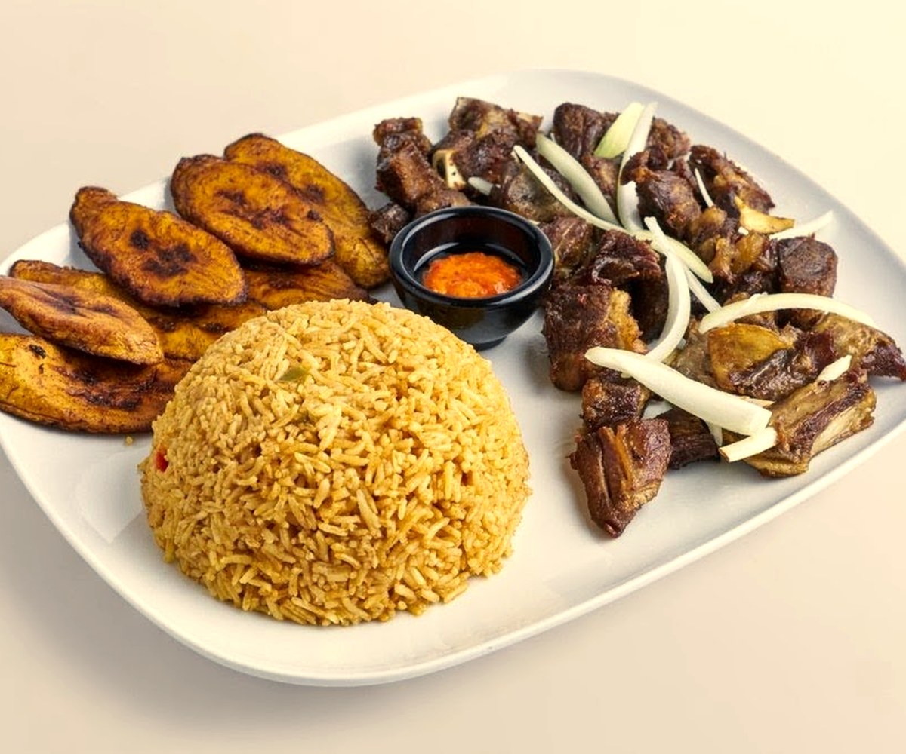
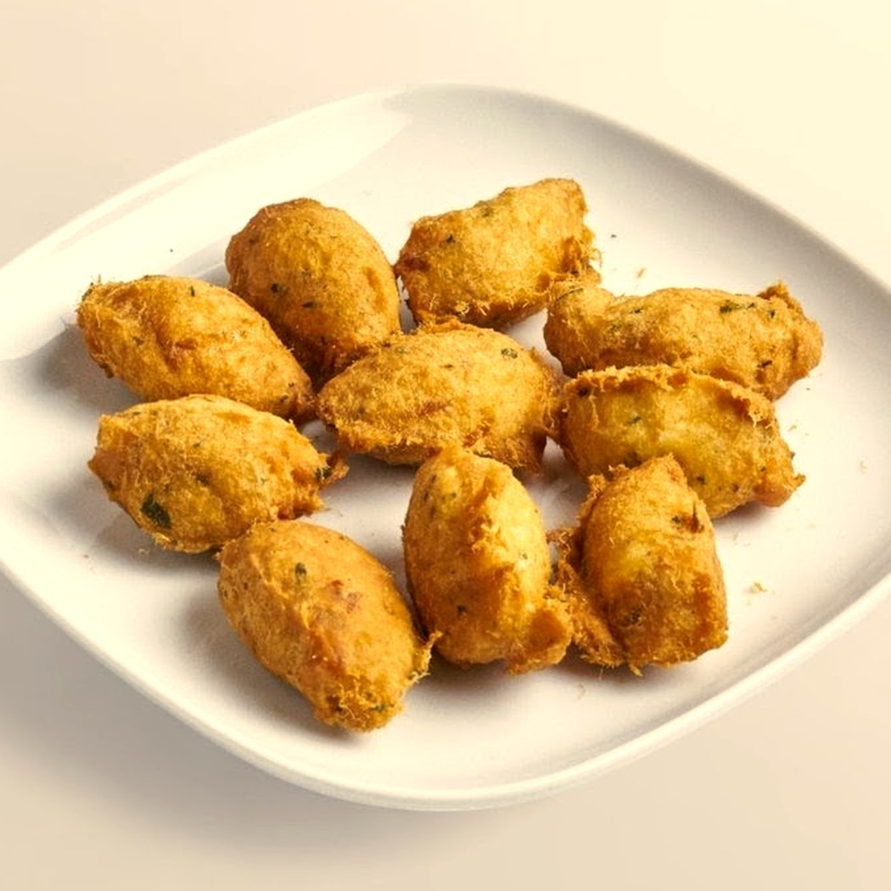
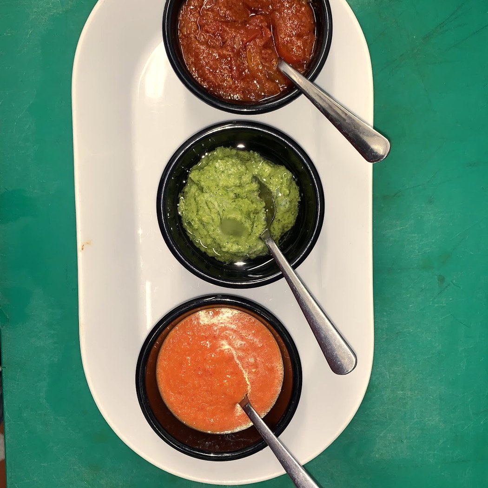
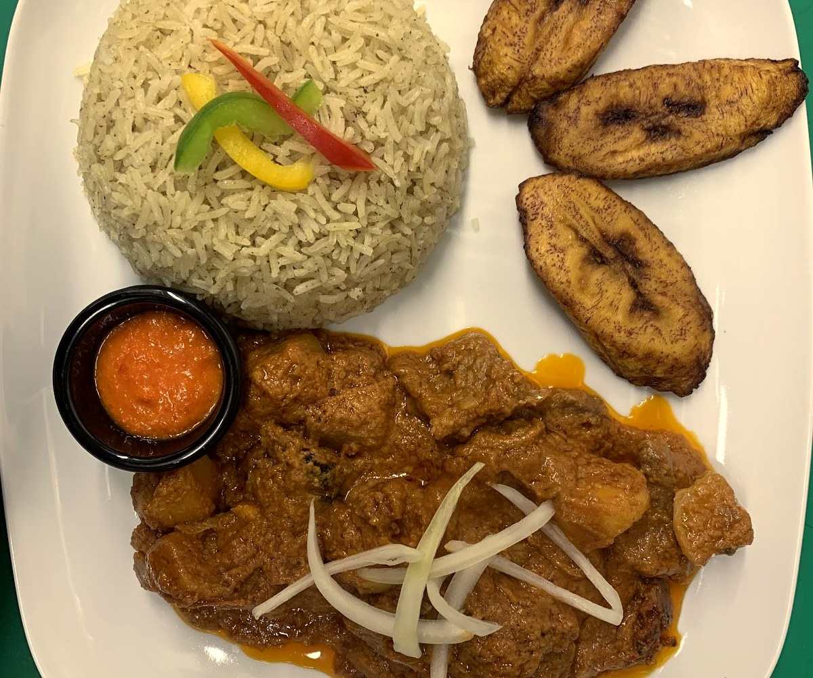
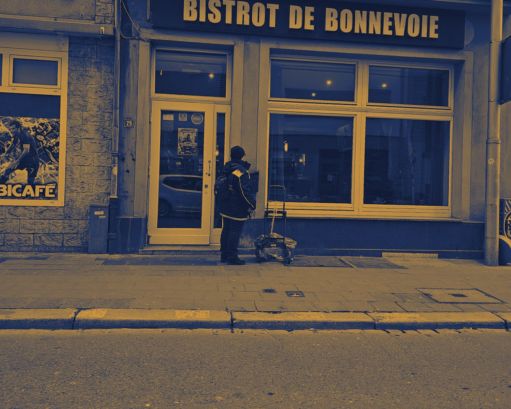

Bistrot de
Bonnevoie
Un bout d'Afrique de l'Ouest, à deux pas de la gare. Le midi on mange, le soir on danse.
Le mafésauce arachide
Une sauce à l'arachide qui a mijoté des heures, une viande qui se défait à la cuillère, du riz pour tout saucer.
C'est le plat qu'on ne partage pas vraiment. Servi comme à la maison — généreux, réconfortant, sans chichi. Avec du gombo, du poisson braisé ou du poulet grillé, c'est toute l'Afrique de l'Ouest dans une assiette.

Sauce arachide · rizLa cuisine en couleurs
Poisson braisé, chèvre grillée, gombo, plantain frit, attiéké, beignets — des assiettes généreuses, épicées comme il faut.







Ce qu'on sert
Une cuisine ouest-africaine de partage. Voici les plats qui reviennent — la carte complète et les prix se confirment à la maison.
Les sauces & grillades
Les accompagnements
À grignoter & le bar
Carte relevée à partir de sources publiques (Wolt, Uber Eats), à titre indicatif. Plats, disponibilité et prix à confirmer avec la maison.
Et le soir,ça devient un club.
Les assiettes laissent la place au bar. DJ, afrobeats, amapiano — « Luxembourg Afrosound ». On reste tard, on danse, on refait le monde jusqu'à 1h du matin.

Nous trouver
L-1260 Luxembourg · quartier Gare
Ouvert tard, jusqu'à 01:00 · horaires à confirmer